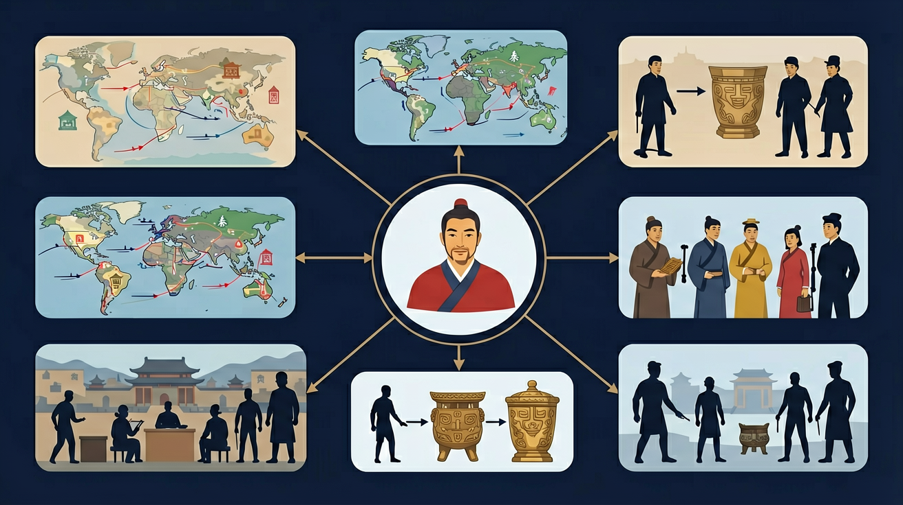

❓ 为什么秦始皇要焚书坑儒？
❓ 汉武帝的推恩令到底厉害在哪？
❓ 都说秦朝短命，为啥制度能影响中国两千年？
学完这一课，这些问题你都能自信地回答。
🎯 能说出郡县制与分封制的核心区别
🎯 能分析汉武帝盐铁专营政策的经济控制逻辑
🎯 能判断出土简牍对研究秦汉社会的一手史料价值
睡虎地秦简最能直接证明什么？
汉代'三十税一'反映的本质是？
秦汉帝国是高中历史的重要内容。通过了解秦朝的统一业绩和汉朝削藩、开疆拓土、尊崇儒术等举措，认识统一多民族封建国家的建立及巩固在中国历史上的意义。
通过了解秦汉时期的社会矛盾和农民起义，认识秦朝崩溃和两汉衰亡的原因。
And：学生知道秦统一六国
But：不理解郡县制如何颠覆分封制
Therefore：理解中央集权制度起源
秦始皇创立的郡县制彻底改变了中国政治结构。比如将全国分为36郡（后增至48郡），郡守直接由皇帝任命，不像周代诸侯世袭。咸阳出土的里耶秦简显示，连湖南迁陵县这样偏远地区，县令工资、刑徒管理都要向中央详细汇报。这种'中央→郡→县'三级管理模式延续了2000多年。
🌍 就像现在快递分拣中心：北京总部（中央）→省级转运中心（郡）→社区驿站（县），每个环节都有标准流程和数字追踪，确保全国统一调度。
秦朝郡县制与周代分封制最大区别是？
秦统一后确立皇帝制度、三公九卿与郡县制，统一车轨、文字与度量衡，奠定大一统中央集权框架。汉承秦制又有郡国并行、察举等调整；汉武帝加强集权、独尊儒术、开疆通西域，统一多民族国家进一步发展。
点击时代/图层按钮切换地图；悬停边界，点击城市标记查看说明。
1. 错误表现：认为秦朝"书同文"政策完全消灭了六国文字。学生常将《琅琊刻石》等标准化小篆当作唯一文字形态。认知根源在于过度简化"统一"概念，忽视湖北云梦睡虎地秦简中保留的楚文字痕迹。正确理解应是：秦朝以"三统一"（文字/度量衡/车轨）为手段，但实际执行存在地域差异，里耶秦简显示基层文书仍混用古隶书，文字统一是渐进过程，直到汉武帝时期才真正完成。
2. 错误表现：混淆汉初"郡国并行制"与西周分封制。学生常将刘邦分封同姓王等同于周代封建。认知根源是忽视汉代"犬牙交错"的行政区划设计，如长沙国与南郡的边界故意打破地理单元。正确理解应关注《二年律令》中"王国官制减天子一等"的制度设计，诸侯王需用汉法，且文帝推行的"众建诸侯"政策通过分割齐国为七国，彻底改变分封性质。
3. 错误表现：夸大丝绸之路的贸易量。学生常将敦煌悬泉置遗址出土的"浮屠简"等宗教传播证据等同于大规模商贸。认知根源是受影视作品影响。正确理解需依据居延汉简记载：西域都护年经费仅2470万钱，不到国家财政0.2%。丝绸之路本质是政治外交通道，经济价值在唐代才凸显，如罗马金币在中国出土最早见于北周（538年）。
复制提示词到 AI 学伴，生成「秦汉帝国」的时间轴或事件提纲；也可以上传你手绘的示意图，请 AI 学伴点评。
复制后可粘贴到 AI 学伴继续对话。
比较秦与汉：制度继承与修正、思想从法家主导到儒法合流、边疆与丝绸之路。评价统一措施时区分积极作用与暴政苛法。
常见误区：常见误区是把汉完全等同于秦，或否定秦制对后世的深远影响。
秦朝在地方行政上全面推行？
1. 现代高铁轨道标准（1435mm）直接源自秦朝"车同轨"。考古发现秦直道车辙间距1.4-1.5米，与英国工程师斯蒂芬森1825年设计火车轨道时参考的罗马道路（4英尺8.5英寸）惊人一致。2023年匈塞铁路建设中，工程师仍需考虑秦汉时期确立的轨道兼容性原则。
2. 西汉"均输平准"政策启发现代冷链物流。桑弘羊在长安太仓建立的"冰室"（《汉书·百官公卿表》记载藏冰量达3万立方米）开创国家储备体系。2021年新冠疫苗全球分配方案COVAX，正是借鉴了汉代"调均物资"思想，通过郑州国家储备中心实现2℃恒温运输。
3. 秦代"物勒工名"质量追溯制度应用于区块链。西安兵马俑青铜剑上的"相邦吕不韦造"铭文，与2022年特斯拉上海工厂采用的零部件溯源系统原理相同。阿里巴巴"蚂蚁链"对阳陵虎符的防伪研究，直接参考了秦汉错金工艺的物理不可复制特性。
1. 问题：秦汉帝国为何选择"重农抑商"而非罗马式的奴隶制经济？分析线索：比较《商君书·垦令》与《加图农业志》对劳动力价值的论述，注意汉代"编户齐民"制度下自耕农比例（约70%），对照罗马拉蒂芬丁庄园奴隶占比。思考气候周期（竺可桢曲线显示秦汉温暖期）对两种模式的影响。
2. 问题：汉武帝盐铁专营真是为"与民争利"吗？分析线索：重新解读《盐铁论》辩论背景，计算漠北之战耗资（卫青单次出征费24亿钱），对比盐官年收入（临邛盐井岁入千万）。考察现代国家战略资源管理案例，如2020年新冠疫情期间美国的国防生产法 invocation。
先看地理基础：秦帝国在泾渭河谷发展出"畎亩法"农业（宝鸡斗鸡台遗址显示亩产1.5石），接着通过郑国渠将关中耕地扩大至4万顷，这是统一战争的物质保障。商鞅"分异令"强制家庭小型化，造就2600万人口基数，使长平之战能动员60万兵力。
政治制度演进从"三公九卿"到"中朝外朝"：秦始皇泰山刻石强调"皇帝"称号的独特性，而汉代尚书台的出现（武帝时期仅5人编制）反映决策中心转移。对比未央宫前殿（占地面积6万㎡）与罗马元老院（仅1200㎡），可见东方集权体制的空间表达。
经济控制手段日益精密：从云梦秦简《效律》对衡器误差的惩罚（超1%罚一甲），到张家山汉简《算数书》中"均输"问题的复杂计算（涉及分数运算）。最后看文化整合：东汉熹平石经用标准隶书刻写7部经典，与秦代"以吏为师"形成闭环，王充《论衡》"宣汉"篇标志着帝国意识形态成熟。
迁移任务：找一道与「秦汉帝国」相关的练习题或生活情境，用本课方法完整解答一遍。
把卡片拖到核心概念 / 方法技能 / 应用情境 / 常见误区。
拖完 4 项后自动判分。
通过了解秦朝的统一业绩和汉朝削藩、开疆拓土、尊崇儒术等举措，认识统一多民族封建国家的建立及巩固在中国历史上的意义。
关于秦汉政治制度最准确的是
对比秦长城与汉长城在建造目的、材料、路线方面的异同
先独立作答，再点选项查看对错与错因。
秦始皇推行郡县制的根本目的是
汉武帝实行推恩令主要针对
秦汉时期最具代表性的书写材料是
秦始皇统一文字的标准字体是____
答案：小篆
李斯主持制定的小篆成为官方文字
汉武帝时期____出使西域，开辟丝绸之路
答案：张骞
张骞两次出使西域促进中外交流
（高考真题）《史记·平准书》载'富商大贾...冶铸煮盐，财或累万金'，汉武帝解决此问题采取的核心措施是？
（迁移）若某朝代出现'郡国并行-七国之乱-颁布推恩类政策'的发展轨迹，可推断该王朝处于？
（史料题）里耶秦简记载'迁陵以邮行洞庭'说明？
✅ 实际针对方士和部分反对郡县制的儒生
💡 混淆《史记》中'诸生'的具体指代
✅ 本质是削弱诸侯的渐进式削藩手段
💡 忽视'众建诸侯而少其力'的政治设计
口诀：秦法汉儒定框架，郡县盐铁稳天下
类比：像乐高套装：秦朝是基础底板（制度），汉朝是搭建的模块（完善）
复述本课两个核心概念的定义。
用本课方法分析一个新例子。
有同学认为：认为焚书坑儒针对所有儒家学者 —— 请说明错在哪里。
有同学认为：将推恩令理解为单纯恩赐政策 —— 请说明错在哪里。
把还没弄明白的地方写下来问 AI 学伴。它会先帮你找到卡住的地方，再给你一个小小的提示，让你自己往前走一步。